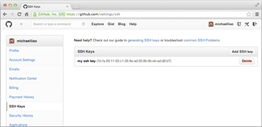

到目前为止，我们已经掌握了如何在 Git 仓库里对一个文件进行时光穿梭，你再也不用担心文件备份或丢失的问题了。
可是有用过集中式版本控制系统 SVN 的同学会站出来说，这些功能在 SVN 里早就有了，没看出 Git 有什么特别的地方。
没错，如果只是在一个仓库里管理文件历史，Git 和 SVN 真没啥区别。为了保证你现在所学的 Git 物超所值，将来绝对不会后悔，同时为了打击已经不幸学了 SVN 的同学，本章开始介绍 Git 的杀手级功能之一：远程仓库。
Git 是分布式版本控制系统，同一个 Git 仓库，可以分布到不同的机器上。怎么分布呢？最早，肯定只有一台机器有一个原始版本库，此后，别的机器可以「克隆」这个原始版本库，而且每台机器的版本库其实都是一样的，并没有主次之分。
你肯定会想，至少需要两台机器才能玩远程库不是？但是我只有一台电脑，怎么玩？
其实一台电脑上也是可以克隆多个版本库的，只要不在同一个目录下。不过，现实生活中是不会有人这么傻得在一台电脑上搞几个远程库玩，因为这样完全没有意义，而且硬盘挂了会导致所有库都挂掉，所以我也不告诉你在一台电脑上怎么克隆多个仓库。
实际情况往往是这样，找一台电脑充当服务器的角色，每天 24 小时开机，其他每个人都从这个「服务器」仓库克隆一份到自己的电脑上，并且各自把提交推送到服务器仓库里，也从服务器仓库中拉取别人的提交。
完全可以自己搭建一台运行 Git 的服务器，不过现阶段，为了学 Git 先搭个服务器绝对是小题大做。还在这个世界上有个叫 GitHub 的神奇网站，从名字就可以看出，这个网站就是提供 Git 仓库托管服务的，所以，只要注册一个 GitHub 账号，就可以免费获得 Git 远程仓库。
在继续阅读后续内容前，请自行注册 GitHub 账号。由于你的本地 Git 仓库和 GitHub 仓库之间的传输是通过 SSH 加密的，所以，需要一点设置：
第 1 步：创建 SSH Key。在用户主目录下，看看有没有 .ssh 目录，如果有，再看看这个目录下有没有 id_rsa 和 id_rsa.pub 这两个文件，如果已经有了，可直接跳到下一步。如果没有，打开 Shell（Windows 下打开 Git Bash），创建 SSH Key：
$ ssh-keygen -t rsa -C "youremail@example.com" |
你需要把邮箱地址换成你自己的，然后一路回车，使用默认值即可，由于这个 Key 也不是用于军事目的，所以也无需设置密码。
如果一切顺利的话，可以在用户主目录里找到 .ssh 目录，里面有 id_rsa 和 id_rsa.pub 两个文件，这两个就是 SSH Key 的秘钥对，id-rsa 是私钥，不能泄露出去，id-rsa.pub 是公钥，可以放心地告诉任何人。
第 2 步：登录 GitHub，打开「Account setting → SSH Key」页面，然后点「Add SSH Key」，填上任意 Title，在 Key 文本框里粘贴 id_rsa.pub 文件的内容：

点「Add Key」，你就应该看到已经添加的 Key：

为什么 GitHub 需要 SSH Key 呢？因为 GitHub 需要识别出你推送的提交确实是你推送的，而不是别人冒充的，而 Git 支持 SSH 协议，所以，GitHub 只要知道了你的公钥，就可以确认只有你自己才能推送。
当然 GitHub 允许你添加多个 Key。假定你有若干电脑，你一会在公司提交，一会儿在家里提交，只要把每台电脑的 Key 都添加到 GitHub，就可以在每台电脑上往 GitHub 推送了。
最后友情提示，在 GitHub 上免费托管的 Git 仓库，任何人都可以看到（但只有你自己才能修改），所以不要把敏感信息放进去。
如果你不想让别人看到 Git 库，有两个办法，一是交点保护费，让 GitHub 把公开的仓库变成私有的，这样别人就看不见了（不可读更不可写）。另一个办法是自己动手，搭一个 Git 服务器，因为是你自己的 Git 服务器，所以别人也是看不见的。这个方法我们后面会讲到，相当简单，公司内部开发必备。
确保你拥有一个 GitHub 账号后，我们就即将开始远程仓库的学习。